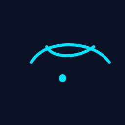

The Invitation
In the margins of municipal ledgers, a rhythm is written: three counts, a pause. An apprentice hums it at the market stall without knowing why their hands keep the beat.

In the margins of municipal ledgers, a rhythm is written: three counts, a pause. An apprentice hums it at the market stall without knowing why their hands keep the beat.
The clay token sits misfiled in a ledger. A thumb finds it and wonders. The curl is imperfect; it fits into a question the finder does not yet know how to ask.
Aude's small discoveries ripple. A seam, a hum, a token—these are the hinge of new stories. Kinle stands not as a city but as a world that remembers.